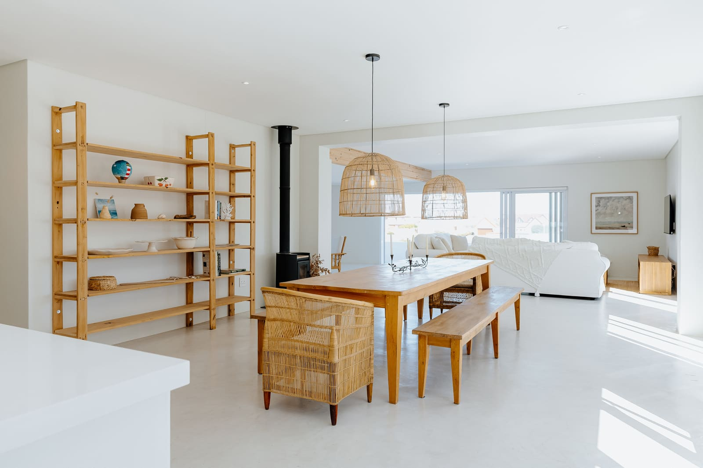
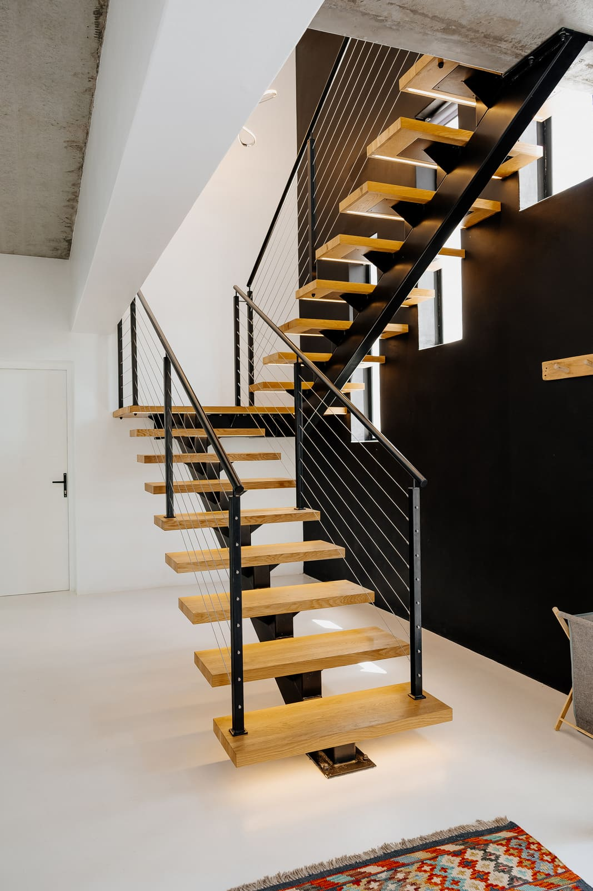
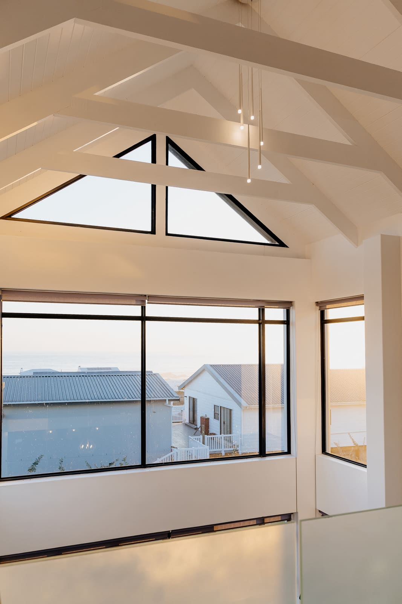
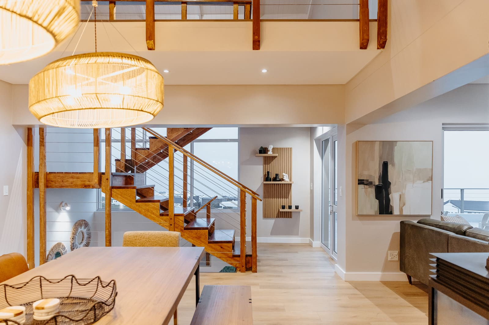
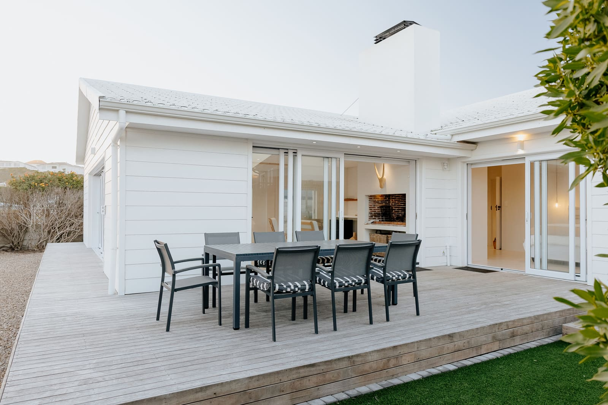
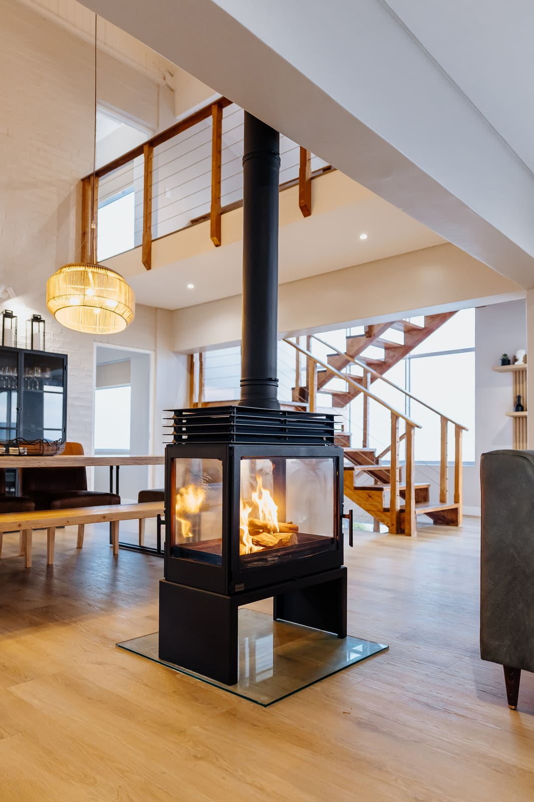
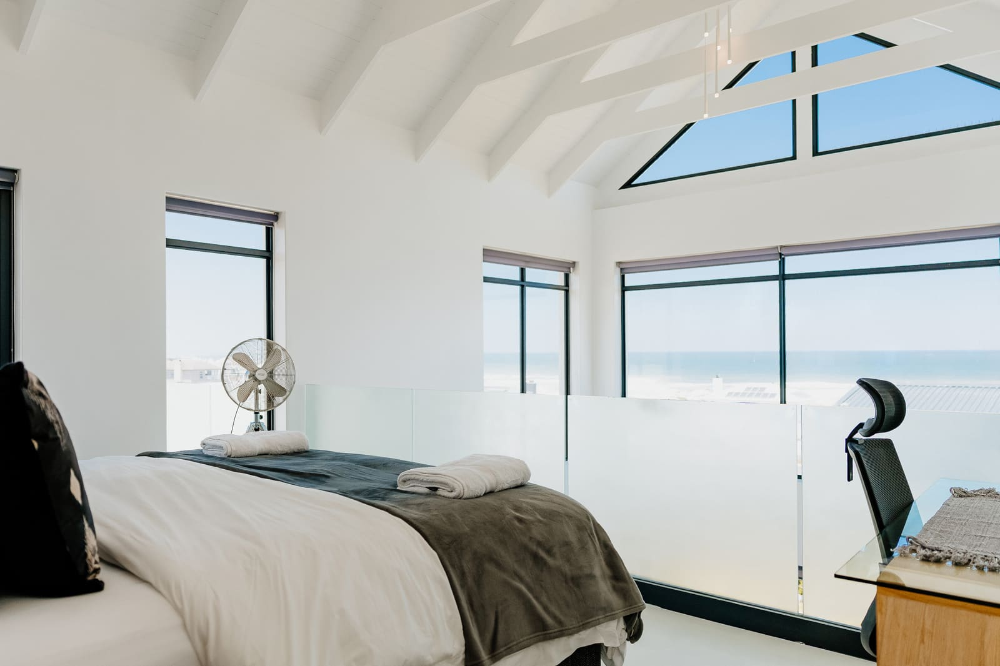
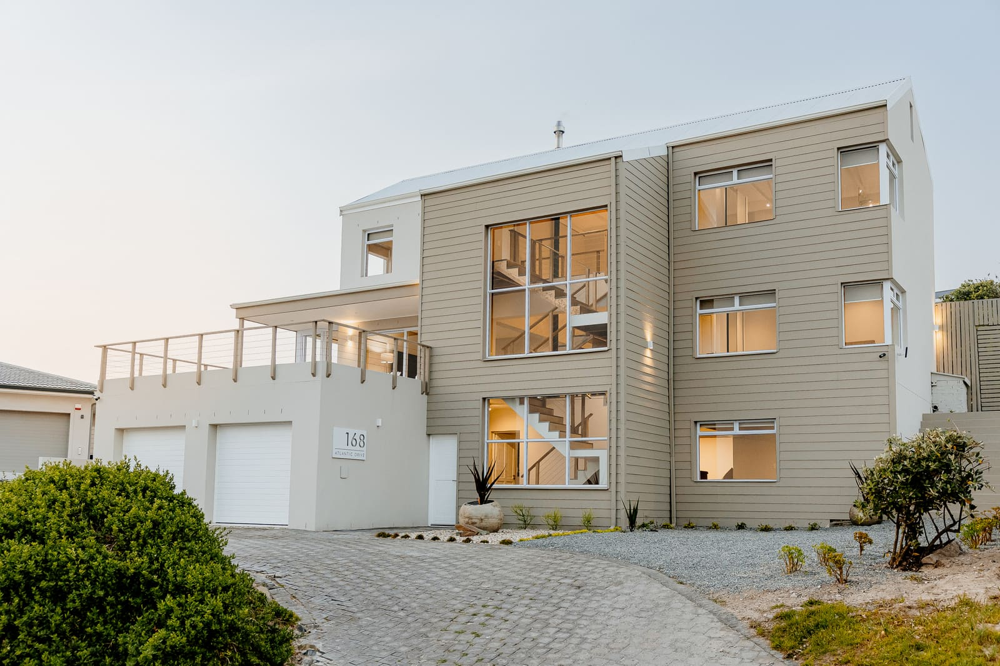

Beach houses · Holiday homes · Coastal listings
Coastal property photography in Cape Town & the West Coast

Since 2016
Based in Yzerfontein
SDP Real Estate is the property side of Silver Dune Photography. I photograph beach houses, holiday homes and coastal listings with the same eye for light, detail and atmosphere I bring to weddings, so buyers and guests can feel what it's like to be there.
Homes photographed the way they feel
A coastal home is never just its floor plan. People fall for the light pouring through a double-volume window, the line of a staircase against the sea, the calm of a whitewashed room at midday. My coastal property photography is planned around those moments: I look at which way the house faces, what time the light is best and which spaces tell its story before I arrive.
The result is a set of images that works as hard on Property24, Private Property and Airbnb as it does in a brochure or on Instagram. Honest colour, straight lines, windows that still show the view, and the atmosphere that makes someone want to book or buy.
Recent coastal property shoots






Property photography services
Book a single listing shoot or a full holiday-home story. Every shoot includes planning around the light, careful editing and a private online gallery with files sized for listing portals, print and social media.

Property listing photography
Sales & rentalsInteriors and exteriors for homes on the market: bright, level and true to colour, with the view kept in every window.
Holiday home & Airbnb photography
Holiday letsAtmosphere is what books a beach house. Alongside every room, I photograph the details guests fall for: the outdoor shower, the fire pit, the hammock at sunset.
Golden hour & dusk exteriors
Hero imagesExteriors timed for the soft light before sunset and the blue hour after it, when the house lights glow against the sky.
Lifestyle & detail photography
StorytellingWine by the fire, towels on the hook, a hat by the door. Small styled moments that turn a listing into a place someone wants to be.
Architects, builders & designers
PortfolioPhotography for the people who design, build and style coastal homes, licensed for websites, award entries and print.
Social media sets
SocialVertical crops and image sets sized for Instagram, Facebook and WhatsApp, delivered with the main gallery.
“I love that she catches the smallest little details and that she has a great talent for conveying the overall atmosphere.”AneneSilver Dune Photography client

The photographer behind SDP
I've photographed weddings and elopements as Silver Dune Photography since 2016, from West Coast beaches to the winelands. Reading light, noticing small details and waiting for the right moment are what make a wedding album feel alive. They do the same for a home.
SDP Real Estate brings that eye to beach houses, holiday homes and coastal listings, from my home base in Yzerfontein. You work with me from the first message to the final gallery.
Visit Silver Dune PhotographyHow a property shoot works
- I
Enquiry & brief
Tell me about the home, who it's for and when it needs to go live. I'll reply with available dates and a fixed quote.
- II
Planning the light
I check which way the house faces and plan the shoot around its best light, with golden hour saved for the exteriors.
- III
The shoot
Usually two to four hours. You'll get a short preparation checklist beforehand, and I style the small details on the day.
- IV
Your online gallery
A preview gallery arrives within 48 hours. Edited images follow in a private online gallery within 2 weeks, ready for listings, print and social media.
Coastal property photography across the Western Cape
Based in Yzerfontein, I photograph beach houses, holiday lets and family homes up and down the West Coast and across Cape Town. Travel is included in every quote, and shoots further afield are welcome on request.
West Coast
- Yzerfontein
- Langebaan
- Paternoster
- Jacobsbaai
Saldanha Bay
- Saldanha
- St Helena Bay
- Shelley Point
- Velddrif
Blouberg Coast
- Bloubergstrand
- Big Bay
- Melkbosstrand
Atlantic Seaboard
- Sea Point
- Camps Bay
- Clifton
- Llandudno
- Hout Bay
Southern Peninsula
- Noordhoek
- Kommetjie
- Simon's Town
Property photography FAQs
How much does property photography cost?
Every home is different, so each shoot is quoted on the property's size, the number of images and whether you'd like golden-hour or dusk exteriors. Send the address and you'll receive a fixed quote.
What is the best time of day to photograph a coastal home?
It depends on which way the home faces. Most West Coast and Atlantic Seaboard homes look out towards the sunset, so interiors are photographed in soft daylight and exteriors in the late afternoon and the blue hour after sunset.
How quickly will I receive my photos?
A preview gallery arrives within 48 hours, so you can start planning your listing. The full set of edited images follows in a private online gallery within 2 weeks, sized for property portals, print and social media.
Do you photograph Airbnb and holiday rental homes?
Yes. Holiday home shoots include every room plus lifestyle and detail images, such as the fire pit, the outdoor shower and the view at sunset, which help guests picture their stay.
How should I prepare my home for the shoot?
You'll receive a short checklist before the shoot: clear counters, make the beds, switch on every light, open the blinds and move cars off the driveway. Small styling touches are taken care of on the day.
Which areas do you cover?
I'm based in Yzerfontein and cover the West Coast from Yzerfontein and Langebaan to Paternoster and St Helena Bay, as well as the Blouberg coast, Cape Town and the Atlantic Seaboard. Shoots further afield are welcome on request.

Book a property shoot
Tell me about the home and when it needs to go live. I'll reply with available dates, the best light for the property and a fixed quote.
- jude@silverdunephoto.com
- @silverdunephoto
- Based in
- Yzerfontein, West Coast